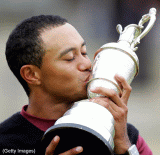

| 2005
Open Championship Golf Pool
The 2005 Open Championship in St. Andrews, Scotland. Played on the Old Course. The last major of Jack’s career. What could be better? Why, wagering on the outcome, of course! In the proud tradition of the British bookmaker, I present to you the 2005 Open Championship Golf Pool. Click on the links below for the rules, how to play, entry form, and other info. Fore! Congrats to Tiger Woods, 2005 Open Champion Congrats to
Blackpool Bill (Bill Hanley), 2005 Open
Pool Champion. |
 |
| Rules and Info | Entry Form | Pool Teams | Pool News | Pool Stats | US Open Pictures | Links | 2005 Masters Pool | TV Times |
Latest Pool News: July 18th, 2005: Congrats, again, to Blackpool Bill (Bill Hanley) for the pool win. I checked the scores against another source and they all matched up. If anyone notices any differences, please let me know. The final scores for each player in the field are available here. I’ve also added everybody’s team score and top 9 players (if you had 9) to the Pool Teams page. Check out how your team fared and see how everyone else did.
Hope
you enjoyed the pool.
Till next time. Cheers, Brian.
Click
here for more news.
FINAL
STANDINGS -- July 17th
|